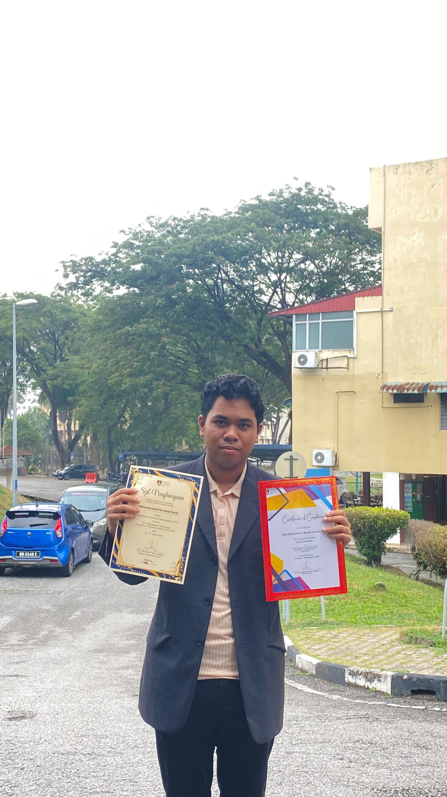

01 / 02 INDUSTRIAL TRAININGJUL — SEP 2026
Industrial Trainee
Perpustakaan Tun Abdul Razak (PTAR)
UiTM Shah Alam
Cross-functional exposure to six areas of an academic library, from digital repositories to records and reporting. Completed 18 September 2026.
Explore experience
Overview
Completed industrial training in a professional academic library, with cross-functional exposure to six areas of library and information operations. The placement showed me how digital repositories, electronic records systems, metadata and research tools work together in an information institution, and strengthened my communication, teamwork, adaptability and professional conduct.
Areas
- Digital library and repository: assisted with repository activities, PERMATA accession work and DOI-related metadata administration.
- Customer services: supported the service counter, user enquiries, reference services, Interlibrary Loan (ILL) and Book Delivery Service.
- Information literacy: observed how librarians support students and researchers, and explored Scopus AI for research and information discovery.
- Archives and records management: gained exposure to the records lifecycle, electronic records administration and disposal-related procedures.
- Galeri Tun Abdul Razak: learned how historical collections and institutional heritage are organised, presented and made accessible.
- Administration, data and reporting: verified annual report information, organised data in Microsoft Excel and prepared charts.
Systems
- PERMATA: digital repository and accession-related activities.
- DDMS 2.0: electronic records management.
- OFA: records and document administration.
- AMS: records administration and disposal-related processes.
- Scopus AI: academic research and information discovery.
- eGallery: digital gallery and institutional collections.
- DOI: the identifier framework used in metadata-related administration.
Programmes
- I-LISS 2026 (International Library and Information Science Symposium), 26–27 August 2026, Hotel UiTM Shah Alam: helped set up and run PTAR's exhibition booth, introduced PERMATA to visitors, supported the Speed Reading activity and engaged with participants from countries including Indonesia, Thailand, South Korea, India, Brunei, the Philippines, Japan, Nigeria and Bangladesh.
- Book Talk with Author, Episode 7: featuring Associate Professor Dr Ahmad Lufti Anis.
- Library Leadership Series 9: focusing on Islamic collections.
- Talaqqi Kerohanian Series 15: Kitab Berzanji, in conjunction with Maulidur Rasul.
- Flag-handover ceremony: National Month and Maulidur Rasul celebrations.
- PTAR Shah Alam volunteer engagement: 9–10 February 2026.
Reporting
- Data analysis and reporting: reviewed and verified annual report information, checked statistical figures for consistency, organised data in Microsoft Excel and prepared charts, comparing materials against PTAR Shah Alam's established reporting standards.
- Completion, 18 September 2026: finalised and verified my logbook, delivered my final presentation to my supervisor, submitted the assessment rubric and took part in the industrial training certificate ceremony.